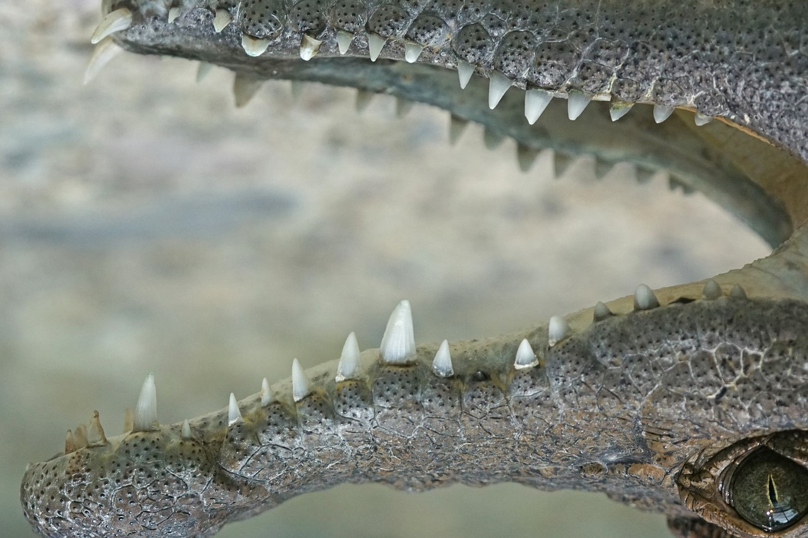
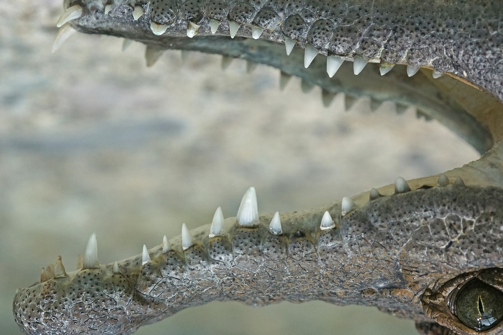

Crocodiles (subfamily Crocodylinae) or true crocodiles are large aquatic reptiles that live throughout the tropics in Africa, Asia, the Americas and Australia.
Crocodylinae, all of whose members are considered true crocodiles, is classified as a biological subfamily.
A broader sense of the term crocodile, Crocodylidae that includes Tomistoma, is not used in this article. The term crocodile here applies to only the species within the subfamily of Crocodylinae.
The term is sometimes used even more loosely to include all extant members of the order Crocodilia, which includes the alligators and caimans (family Alligatoridae), the gharial and false gharial (family Gavialidae), and all other living and fossil Crocodylomorpha.
For 50 years, WWF has been protecting the future of nature. The world's leading conservation organization, WWF works in 100 countries and is supported by 1.2 million members in the United States and close to 5 million globally.
It is only safe to mock a crocodile when you have crossed the river.
― Matshona Dhliwayo
Crocodile size, morphology,
behaviour and ecology differ somewhat among species. However, they have many similarities in these areas as well.
All crocodiles are semiaquatic and tend to congregate in freshwater habitats such as rivers,
lakes, wetlands and sometimes in brackish water and saltwater.
 

| Species name | Distribution | Description/Comments |
|---|---|---|
| American crocodile | Throughout the Caribbean Basin, including many of the Caribbean islands and South Florida. | A larger sized species, with a greyish colour and a prominent V-shaped snout. Prefers brackish water, but also inhabits lower stretches of rivers and true marine environments. |
| Slender-snouted crocodile | Central and Western Africa | A medium sized species with a narrow and elongated snout. Lives in freshwater habitats within tropical forests of the continent. |
| Nile crocodile | Sub-saharan Africa | A large and aggressive species with a broad snout, especially in older animals. It has a dark bronze coloration and darkens as the animal matures. |
Contact
Tra lalalalla alaalala